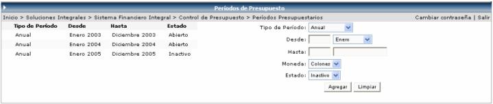

Los periodos presupuestarios operan de forma similar a un catálogo. Son de especial importancia porque permiten definir diferentes periodos presupuestarios de acuerdo a las políticas que maneje la empresa, los mismos pueden ser anuales, semestrales, cuatrimestrales, trimestrales, etc.

El usuario deberá de seleccionar
el tipo de periodo (anual, semestral, cuatrimestral, trimestral, bimestral,
mensual), digitar el año desde y seleccionar el mes desde, la moneda del
periodo y el estado. Al presionar el botón  , el sistema le
calculará el año hasta y el mes hasta automáticamente, dependiendo de
el tipo de periodo seleccionado. Por ejemplo si se selecciona: Tipo de
Periodo igual a Semestral,
año 2006 y mes Enero, el sistema le calculará, año 2006 y mes Junio.
, el sistema le
calculará el año hasta y el mes hasta automáticamente, dependiendo de
el tipo de periodo seleccionado. Por ejemplo si se selecciona: Tipo de
Periodo igual a Semestral,
año 2006 y mes Enero, el sistema le calculará, año 2006 y mes Junio.
Cuando se crea un nuevo periodo presupuestario, el Estado por default es Inactivo, el sistema automáticamente lo cambiará a Abierto cuando el mismo sea aprobado.
Cuando se crea un nuevo periodo presupuestario, el Estado por default es Inactivo, el sistema automáticamente lo cambiará a Abierto cuando el mismo sea aprobado.